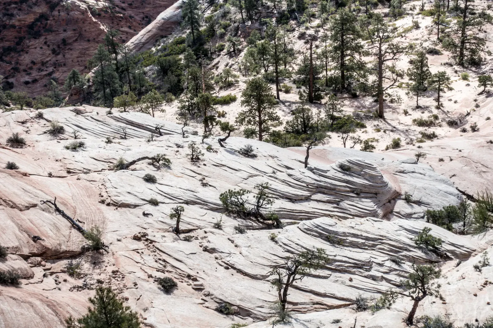

Angels and Watchmen
Zion Canyon is only fifteen miles long, yet its walls climb as much as half a mile above the Virgin River, so most of the sightseeing here is done with your neck bent backwards. Will and I spent a few days in April around Springdale, the little town at the park's front door. We started with the Zion-Mount Carmel Highway, which winds up out of the canyon beneath red cliffs capped in cream. On the east side the walls give way to rolling hills of white slickrock, and the crosshatched lines in the stone are the slopes of sand dunes from nearly two hundred million years ago, frozen into Navajo Sandstone. An entire desert turned to rock! We pulled over at a few overlooks and peered down into narrow slots in the sandstone.
Angels Landing and the Narrows were the big ones. Both trailheads sit along the main canyon road, which is shuttle-only from spring through fall, so plan on riding the bus. From the river, Angels Landing looks like a wall with no way up. A trail zigzags up its back side, and the higher we climbed, the smaller the Virgin River became, until it was a ribbon through cottonwoods that were just leafing out. Back at the bottom, we walked up the river itself into the Narrows, where the canyon closes in until the water is the only trail and sunlight bounces down the walls to turn it gold. You can't help noticing that you are standing inside something that took millions of years to carve, and that the same quiet river is still at it.

One evening the Watchman, the peak that stands guard over the south entrance, caught the last of the sun and turned amber while the valley below slipped into shade. We chased the light along the road until it was gone, then pointed the cameras at the sky. The stars came out in absurd numbers, and a pair of streaks crossed them for good measure (meteors or satellites, I couldn't say).